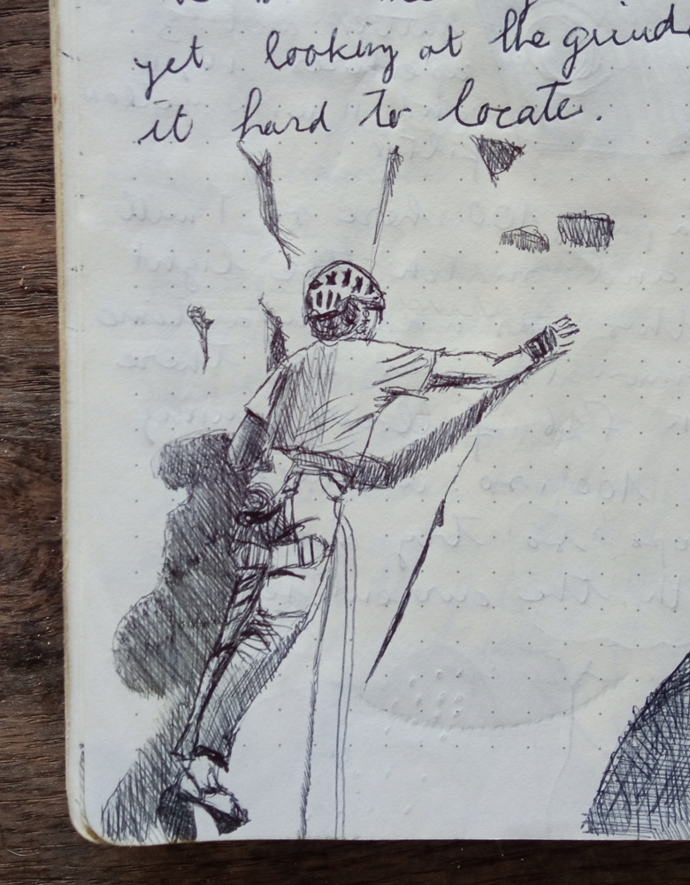
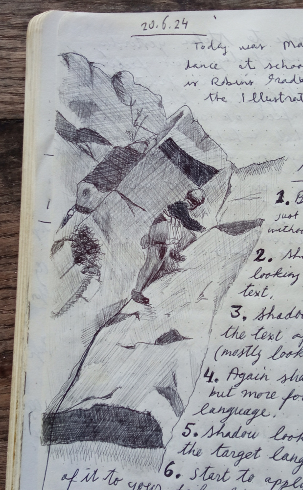
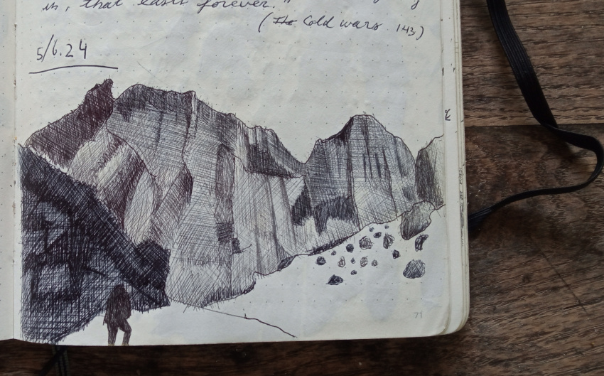

I used to mostly draw from references, but this year I've started drawing from imagination. I discovered that there is so much recorded in my head, I had no idea. It is a work in progress, I can't say that I am completely happy with the drawings, besides proportions and perspective and shading, I don't understand where those images come from. Some of them are right down embarrasing, all of them are strange, but more about that in a different post. in this post I would like to say goodbye to some drawings made with references, either photograps I took, or photographs in books.

A similar idea I am practicing, very slowly and with poor discipline, with music, playing guitar. The equivalent skill in playing an instrument is to be able to play a tune that comes to mind; to play the instrument the way you control your voice in singing and speech.

I don't know why I started to draw with ballpoint. I think it was Sophie that said that I should try ballpoint, that it is a simple, cheap, and common tool, and that it is possible to get really nice results. I found it attractive. Took me a couple of years of hard scratching and plenty of smears of ink to adapt to a valid shading technique. To be honest, I never developed the really patient attitude and practice that some much worthier artists than myself master. I do urge you to look up ballpoint drawing to get an idea.

Looking through my older notebooks I put together the mountain drawings, Rocks.
Rocks and memory. I climb. My climbing companions, all of them and always, remember the rock better than me. Climbers seem to be keen to give the beta to other climbers when they notice that they struggle or hesitate. So me, with the poor rock memory, I look at the rock alot, and feel it alot, and get shouted from up or down: "there's a good foot just to the left of your knee", or "just get a bit higher and you'll find a bomber hold on the right", or "number 4 fits in the crack under that bulge" and so on...
When I climb on my own I am happy to climb the same route again and again, every time it is different for me, everytime it is new. I might try mapping out a route, for art, or for utility, to get familiar, to see what they see. Untill now I drew those from reference. The other day I bought, in a second hand service online, this book whose publishing was crowd-funded. it is called El Arte en el Croquis de la Escalada and it is a collection of 'topos', maps of routes, mostly in Spain. A really nice publication. The seller that sent me the book lives in the Pyrenees, and included an old piton probably found in the rock there; it is now embedded in a beam in my kitchen